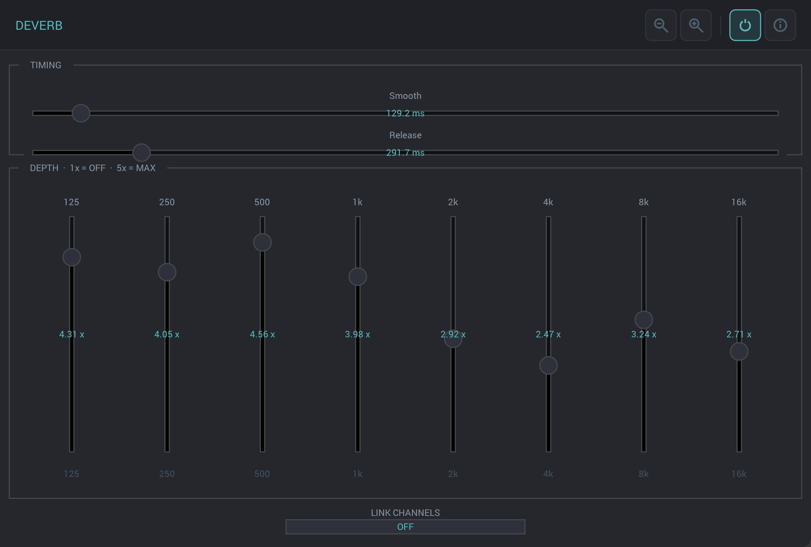

Multiband spectral dereverberation across eight perceptually-spaced frequency bands. Surgical room-acoustic removal for dialogue, voiceover, and location audio.
Free and unsigned — use at your own risk
Each frequency band has an independent depth fader — 1× is off, 5× is maximum suppression. The Smooth control sets the analysis window length; Release controls how fast the suppression tracks the reverb tail. Leave most bands flat and only suppress the bands where the room is most audible.

The plugin splits the signal into eight bark-spaced subbands, then applies spectral subtraction within each band to estimate and remove the reverberant component. Analysis windows compute the envelope of the reverb tail; the suppression gain tracks it in real time.
Unlike convolution-based approaches, this operates on the statistics of the incoming signal — no impulse response measurement required. The algorithm is the deverb module from Monty's Postfish codebase (Xiph.Org, 2002–2005), wrapped in an iPlug2 plugin with FFTW3 for the spectral processing.